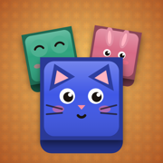

Riad Blocks – Help & Support
How do I play?
Drag pieces from the tray onto the 8×8 board. When a row or column is full, it clears and you earn points and zellige tiles. In Levels, complete the goal shown at the top before you run out of moves. Use tiles on the home screen to restore your grandmother’s riad.
I bought something but don’t see it
What does “Remove ads” do?
It removes the ads that appear between levels, forever, on every iPhone signed in with your Apple ID. Reward videos you choose to watch (for extra moves or double tiles) stay available because they are optional.
Will I lose my progress?
Progress is saved on your iPhone. If you delete the app, your progress is deleted too. Purchases like “Remove ads” and the Souk Fruits blocks come back with Restore purchases.
How do I change the language?
Tap the gear icon and choose English or العربية.
How do I stop personalized ads?
In the iPhone Settings app go to Privacy & Security → Tracking and turn off tracking for Riad Blocks. In Europe and the UK, you can also tap gear → Ad privacy choices in the game.
How do I get a refund?
Purchases are processed by Apple. Request a refund at reportaproblem.apple.com.
المساعدة والدعم – رياض بلوكس
كيف ألعب؟
اسحب القطع من الأسفل إلى اللوحة 8×8. عندما يمتلئ صف أو عمود يُمسح وتربح نقاطًا وبلاط زليج. في المراحل، أكمل الهدف المكتوب في الأعلى قبل أن تنفد حركاتك. استخدم البلاط في الصفحة الرئيسية لترميم رياض جدتك.
اشتريت شيئًا ولا أراه
ماذا تفعل «إزالة الإعلانات»؟
تزيل الإعلانات التي تظهر بين المراحل نهائيًا، على كل آيفون مسجّل بنفس Apple ID. تبقى فيديوهات المكافآت التي تختار مشاهدتها (لحركات إضافية أو مضاعفة البلاط) متاحة لأنها اختيارية.
هل سأفقد تقدّمي؟
يُحفظ التقدّم على جهازك. إذا حذفت التطبيق يُحذف التقدّم أيضًا. أما المشتريات مثل «إزالة الإعلانات» ومكعبات فواكه السوق فتعود عبر استعادة المشتريات.
كيف أغيّر اللغة؟
المس أيقونة الترس واختر English أو العربية.
كيف أوقف الإعلانات المخصّصة؟
من تطبيق الإعدادات في الآيفون اذهب إلى الخصوصية والأمن ← التتبّع وأوقف التتبّع لرياض بلوكس. في أوروبا والمملكة المتحدة يمكنك أيضًا اختيار الترس ← خيارات خصوصية الإعلانات داخل اللعبة.
كيف أسترد المبلغ؟
تتم المشتريات عبر Apple. اطلب الاسترداد من reportaproblem.apple.com.